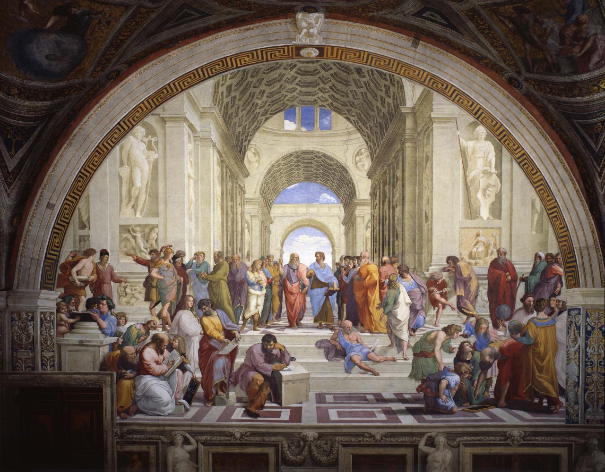
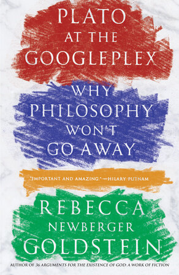
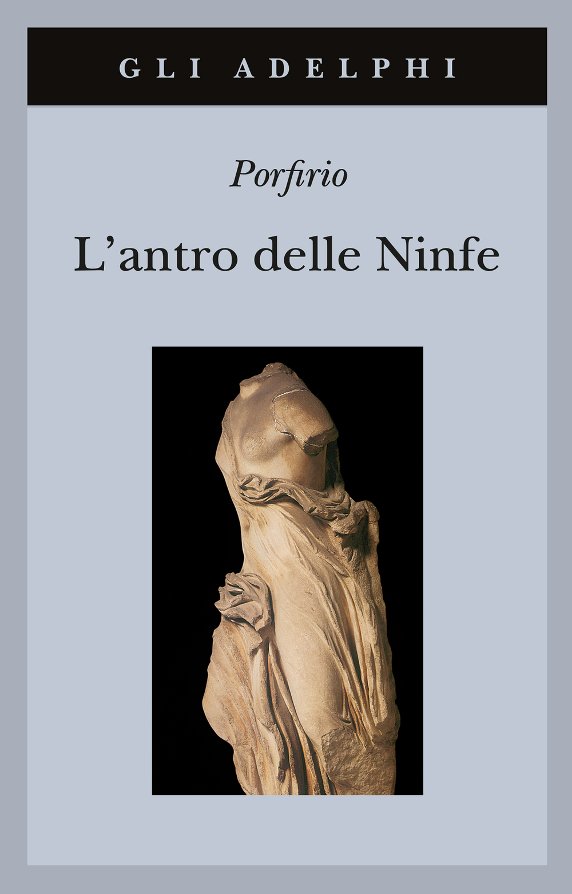

57:07 · 16 OPERE
In che epoca viviamo?
Il filo del discorso
La domanda sul carattere della nostra epoca prende forma attraverso un racconto attribuito a Ernst Bloch: un condannato rifiuta la possibilità di salvarsi perché teme ciò che incontrerebbe nella notte di Valpurga. Dr Divago lo usa per mostrare quanto una narrazione possa incidere sulle scelte. Un vecchio articolo sulla influenza spagnola introduce un secondo esempio di spiegazione immaginaria della malattia.
Leggi la sintesi completaRiduci la sintesi
Il contributo passa quindi dalla forza del mito alla possibilità di difendersi attraverso studio, ragionamento e dialogo. I confronti sanitari appartengono al contesto storico della registrazione e non sono un bilancio attuale della pandemia. Socrate rappresenta il criterio positivo: parlare insieme per esaminare una questione, senza ridurre il confronto alla vittoria di chi ha già una risposta. Trasimaco nella Repubblica offre la figura opposta, mentre il ricordo di una battuta di Russell introduce la disponibilità a riconoscere un errore. La maieutica descrive un lavoro che aiuta a far emergere significati senza poterli trattare come un risultato industriale già previsto. Per Dr Divago la cultura perde questo senso quando viene cercata soltanto per un titolo o una posizione. La scheda distingue tale proposta dalla generalizzazione secondo cui ogni dialogo socratico sarebbe privo di presupposti. La Scuola di Atene di Raffaello diventa il centro visivo della riflessione. Il relatore vi vede una pluralità armonica di gesti, figure e orientamenti, unita dalla ricerca. La oppone alla comunicazione contemporanea che descrive come rumore e farsa. Il paragrafo125 della Gaia scienza di Nietzsche dà le immagini dello smarrimento e della perdita di orientamento. Il titolo Platone al Googleplex apre poi una polemica sulla trasformazione della filosofia in intrattenimento: il giudizio del relatore resta distinto dal progetto del libro di Rebecca Newberger Goldstein, che ricorre al dialogo immaginario per interrogare la attualità della filosofia. La discussione dei profeti biblici porta dalla critica culturale alla responsabilità del singolo. Geremia, Abramo che intercede per la città e la domanda rivolta ad Adamo sono letti come figure di un rapporto maturo con il proprio tempo. Dr Divago distingue la religiosità intesa come ricerca e responsabilità dalla mera obbedienza confessionale. Il ritorno alla caverna della Repubblica collega questi temi all’immagine scambiata per realtà. Due rielaborazioni contemporanee, non identificate con sicurezza, servono a discutere la televisione e la formula secondo cui non vi sarebbe alternativa. Il Gorgia, Schweitzer e il Processo di Kafka riuniscono la conclusione. Il pensiero dovrebbe consentire di interrogare ciò che viene mostrato, anche quando il dissenso espone a isolamento o calunnia. Il crimine del pensare attribuito a Josef K è una interpretazione di Dr Divago, non una imputazione che Kafka espliciti nel romanzo. La risposta alla domanda iniziale rimane dunque una diagnosi filosofica del relatore: una epoca può disporre di molti strumenti di informazione e smarrire il senso delle proprie domande. La proposta conclusiva è tenere aperto il confronto con libri, opere e argomenti, senza trasformare la critica della manipolazione in una nuova adesione automatica.
I libri nel discorso
Tendenz–Latenz–Utopie
Identificazione probabile
Note sul riferimento
Copertina: Copertina ufficiale Suhrkamp del supplemento Tendenz–Latenz–Utopie, stw566, ISBN 9783518281666: titolo e autore arancioni su fondo nero. Edizione tascabile 1985, ristampa 2016; la raccolta originale è del 1978. Non si illustra l’intero cofanetto delle opere o Il principio speranza.
Immagine autentica dell’opera, controllata visivamente; l’edizione di riferimento non è attribuita al filmato.
Bloch e racconto di Valpurga espliciti: corrispondenza con Tendenz–Latenz–Utopie1978p191; titolo non pronunciato.

Apologia di Socrate
Identificazione probabile
Note sul riferimento
Copertina del volume Apologia di Socrate. Critone: BUR · Apologia di Socrate. Critone · a cura di Maria Michela Sassi, 1993
Copertina autentica del volume BUR contenente Apologia di Socrate e Critone. Il secondo titolo non è aggiunto come citazione del video; l’autore del testo è Platone, con Socrate come figura protagonista.
Dialogo come megistonagathon: probabile Apologia38a, titolo non pronunciato.

La Repubblica
Note sul riferimento
Copertina: Laterza · La Repubblica · edizione con testo a fronte di riferimento
Immagine associata all’ISBN di riferimento e controllata visivamente; edizione e traduzione non identificate come quelle citate o lette nel video.
Politeia/Repubblica esplicita, Trasimaco libro I e successiva caverna libro VII.

Teeteto, o sulla scienza
Identificazione probabile
Note sul riferimento
Copertina: Feltrinelli · 1994 · traduzione di Luca Antonelli, introduzione di Salvatore Natoli, saggio di Davide Spanio
Immagine autentica dell’opera, controllata visivamente; l’edizione di riferimento non è attribuita al filmato.
La maieutica e la levatrice rimandano probabilmente al Teeteto150–151, titolo non pronunciato.

Scuola di Atene
Note sul riferimento
Riproduzione ufficiale dell’affresco · Musei Vaticani: Riproduzione fotografica ufficiale dei Musei Vaticani dell’intero affresco nella Stanza della Segnatura, primo Cinquecento. Mostra i due filosofi al centro: Platone con indice sollevato e Aristotele con mano aperta. Non è una copertina libraria o un dettaglio presentato come opera intera.
Immagine autentica dell’opera, controllata visivamente; l’edizione di riferimento non è attribuita al filmato.
La Scuola di Atene di Raffaello è nominata e commentata come immagine della cultura.

La gaia scienza
Note sul riferimento
Copertina: Adelphi · La gaia scienza e Idilli di Messina
Copertina autentica controllata visivamente. Edizione di riferimento, non identificata come quella usata nel video.
La Gaia scienza e paragrafo125 del folle sono espliciti.

Plato at the Googleplex. Why Philosophy Won’t Go Away
Note sul riferimento
Copertina: Copertina ufficiale Vintage,6 gennaio 2015, ISBN 9780307456724: titolo, sottotitolo e Rebecca Newberger Goldstein leggibili su fasce colorate. Il libro originale è del 2014; non si attribuisce una edizione italiana al filmato.
Immagine autentica dell’opera, controllata visivamente; l’edizione di riferimento non è attribuita al filmato.
Titolo Platone al Googleplex esplicito e richiamo al 2014; autore riscontrato editorialmente.

Geremia
Note sul riferimento
Volume completo: La Bibbia: San Paolo, 2014 · Nuova Versione dai Testi Antichi · edizione di riferimento Copertina del volume completo, non edizione autonoma del singolo libro o poema.
Copertina autentica San Paolo già presente, nuovamente vista: titolo La Bibbia, immagine angelica e marchio dell’editore. Il singolo libro o poema è distinto dal volume completo che lo contiene. Traduzione ed esemplare usati nel contributo non sono certificati.
Geremia esplicito; passo su città, divinità e altari riconoscibile in11:13.

Fuga dalla libertà
Note sul riferimento
Copertina: Mondadori, 2022
Fromm e Fuga dalla libertà sono richiamati esplicitamente.

Genesi
Note sul riferimento
Copertina: Einaudi, I libri della Bibbia / Einaudi Tascabili, 2000; introduzione di Steven Rose
Copertina dell’edizione autonoma Genesi, nella serie I libri della Bibbia, con introduzione di Steven Rose. Edizione scelta come riferimento iconografico; nessuna edizione è confermata nel video.
Intercessione di Abramo per Sodoma in Genesi18 e successiva domanda ad Adamo in3:9; libro nominato esplicitamente.
Proverbi
Identificazione probabile
Note sul riferimento
Copertina della Bibbia che contiene Proverbi: San Paolo, 2014 · Nuova Versione dai Testi Antichi · edizione di riferimento
Copertina dell’intera Bibbia. Non rappresenta un’edizione autonoma dei Proverbi e non identifica l’edizione citata nel video.
Sapienza presente alla creazione: probabile Proverbi8:22–31, titolo non pronunciato.

L’antro delle Ninfe (De antro nympharum)
Identificazione probabile
Note sul riferimento
Copertina: Copertina ufficiale gli Adelphi284,2006, a cura di Laura Simonini, ISBN 9788845920561: titolo e autore sopra la fotografia di una statua femminile. La precedente edizione nei Classici è del 1986; nessuna delle due è dichiarata come quella del video.
Immagine autentica dell’opera, controllata visivamente; l’edizione di riferimento non è attribuita al filmato.
Porfirio e origine pitagorica del simbolismo della caverna: riscontro in Antro Ninfe6, titolo non pronunciato.

Gorgia
Note sul riferimento
Copertina: Gorgia, Bompiani, giugno 2001, a cura di Giovanni Reale, testo greco a fronte, 384 pagine, ISBN 9788845291111. Copertina ufficiale blu, bianca e verde acqua con titolo e autore; edizione di riferimento non identificata nel video.
Immagine autentica dell’opera, controllata visivamente; l’edizione di riferimento non è attribuita al filmato.
Gorgia esplicito e citazione riconoscibile in458a–b.

The Decay and Restoration of Civilization
Identificazione probabile
Note sul riferimento
Copertina della raccolta: Prometheus · The Philosophy of Civilization · 1987 · raccolta in inglese
Copertina della raccolta Prometheus del 1987 che contiene The Decay and Restoration of Civilization e Civilization and Ethics. I due saggi, originariamente distinti, restano voci separate. L’edizione in inglese dell’immagine non è attribuita al video.
Rinvio ai due lavori di critica culturale già discussi: probabile prima parte della Kulturphilosophie, titolo non detto.
Civilization and Ethics (Kultur und Ethik)
Identificazione probabile
Note sul riferimento
Copertina della raccolta: Prometheus · The Philosophy of Civilization · 1987 · raccolta in inglese
Copertina della raccolta Prometheus del 1987 che contiene The Decay and Restoration of Civilization e Civilization and Ethics. I due saggi, originariamente distinti, restano voci separate. L’edizione in inglese dell’immagine non è attribuita al video.
Il secondo dei due lavori sulla cultura è probabilmente Kultur und Ethik; il titolo non è pronunciato.

Il processo
Note sul riferimento
Copertina: Adelphi · gli Adelphi, 2020 · edizione di riferimento
Il processo di Kafka e Josef K espliciti; il crimine di pensare è interpretazione del relatore.